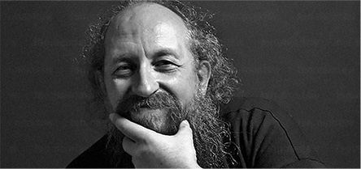

[ Смотри, как обычные люди ... ]
Которые даже в школе не изучали программирование, без гениальных навыков
в математике, невероятных талантов природных способностей и блата
сделали свой прорыв в IT!
Мені дуже сподобалися курси від GoIT (пройшла першу частину Frontend
восени 2017р.)! Я випадково знайшла ці курси у Facebook. Пройшла пробний
тест. Потім зі мною зв’язалися і пояснили всі деталі навчання. Мені було
дуже цікаво, але все ж були й сумніви. Проте я пішла на курс і не
пошкодувала ні разу! У мене був надзвичайний ментор — Alexander Repeta.
Матеріалу було багато, вебінари були насичені, все зрозуміло пояснювали,
жодне питання не залишилося без відповіді, завдання теж швидко
перевіряв. Soft Skills викладав Антон Чорний, і теж було цікаво. Стільки
всього нового, з цікавими прикладами. З організаційними та технічними
питаннями проблем не було: були всі доступи і весь матеріал. Навчання
було нелегким. Потрібно багато часу щоб розібрати матеріал, інколи і
вебінари повторно проглядала. В результаті маю гарні знання та
сертифікат ) Також команда GoIT допомогла мені знайти перше місце роботи
— за це окремо дуже дякую! Тепер я знаю куди звертатися за знаннями )))
Я рада, що GoIT розширює напрямки курсів — це здорово і дуже потрібно!
Дякую!!!
[ Однако предупреждаем_ ]
Получить навыки, нужные, чтобы зарабатывать в IT может быть долго и
сложно….
-
непонятный «программистский» язык
От которого у нормального человека просто пухнет голова
-
неясно, что именно читать и учит
Чтобы не просто знать, но и получить реальную работу.
-
в Интернете полно теории
Однако теория не ведет к деньгам, она просто отнимает твое время
-
легко сдаться и все бросить
Без поддержки и источника мотивации
-
проще пойти раздавать листовки на улице, чем продолжать
Если ты не видишь быстрого роста навыков и денежного «выхлопа» от
изучения
[ Поэтому так много людей_ ]
Которые пытается получить IТ специальность — обламываются и бросают, а в
обществе процветает мнение, что для хорошего заработка в этой сфере
нужно быть математическим гением-задротом…

… однако на самом деле
Так как Васерман выглядят только программисты, которые готовы жизнь
положить на проекты типа «сделать новый Windows»…
Им действительно нужно быть гениями, днями и ночами ковыряться
Но если ты не хочешь углубляться в дебри программирования
А просто хочешь заниматься интересными проектами и хорошо при этом
зарабатывать, и иметь время на личную жизнь…
Тогда сейчас перед тобой есть другой путь — стартовать карьеру в IT с
позиции разработчика веб-приложений или сайтов.

Веб-разработчик
— Это специалист, который делает красивые сайты, интересные приложения,
и всякие «клевые штуки», за которые хорошо платят… при этом стать
разработчиком может каждый, у кого была в школе 4ка по информатике и у
кого достаточно желания и упорства.
[ Карьера веб- -разработчика_ ]
Это твоя возможность зарабатывать в IT без необходимости изучать тонны
нудной теории, которая не ведет к заветной работе и деньгам